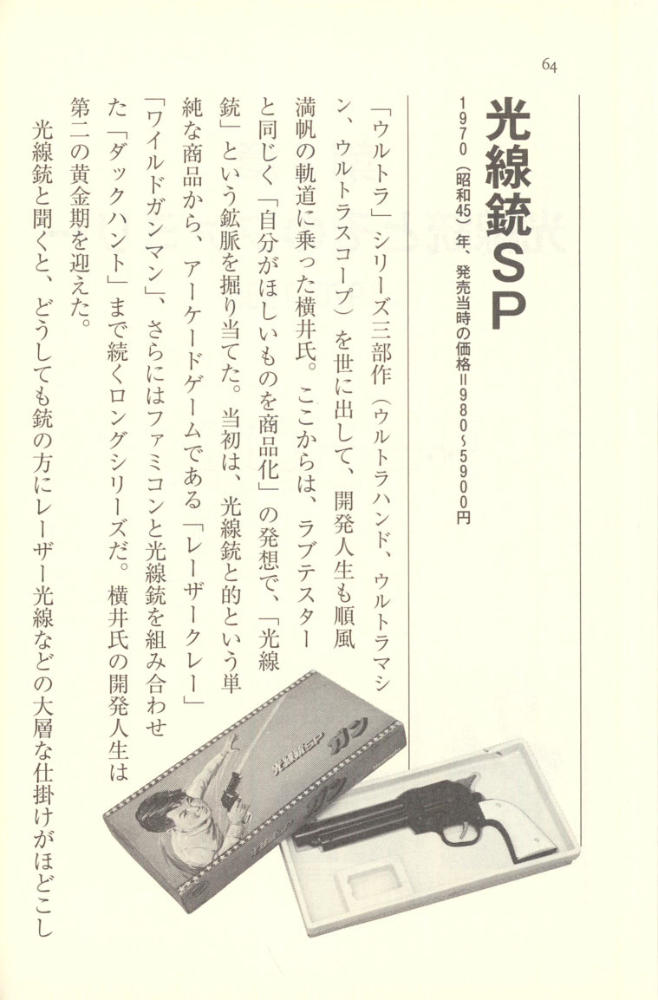
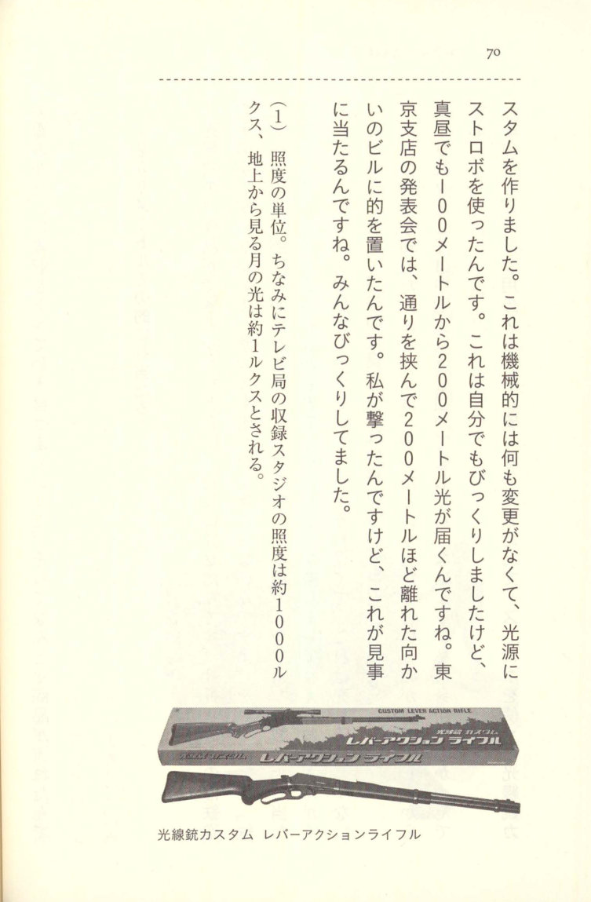
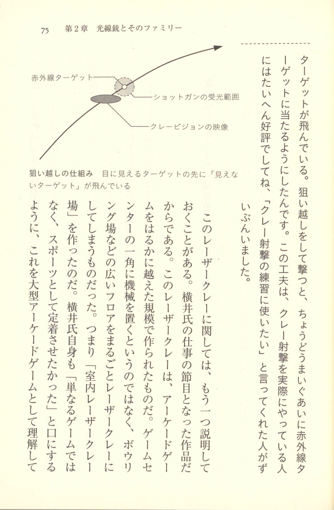
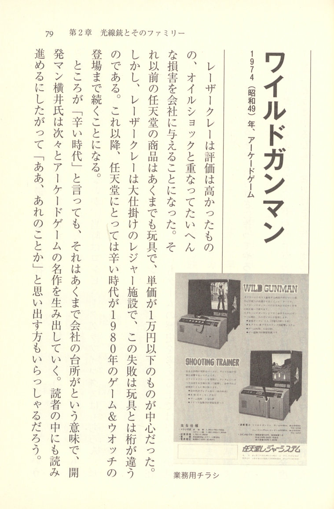
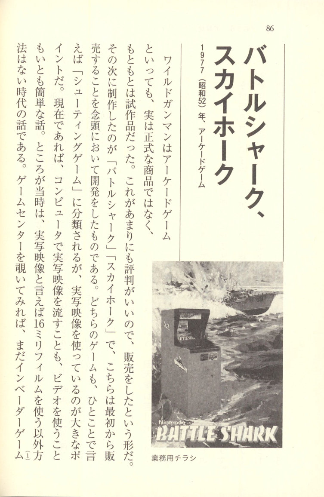
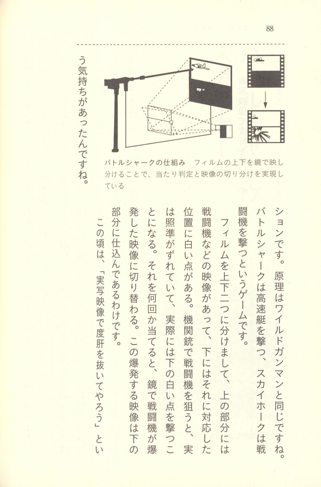
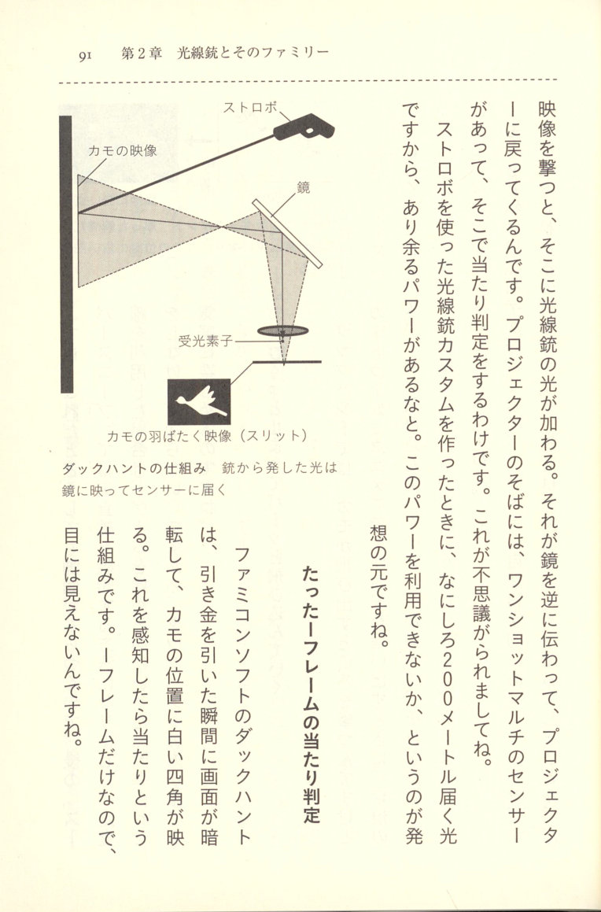
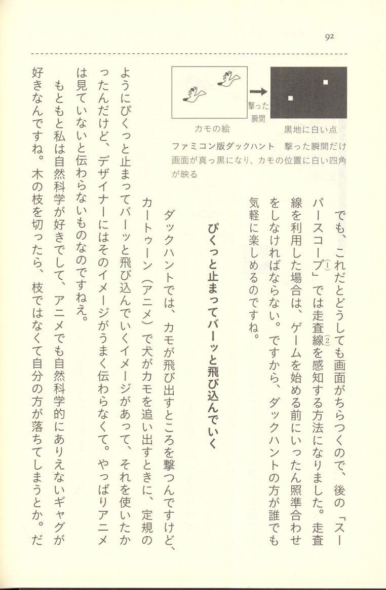
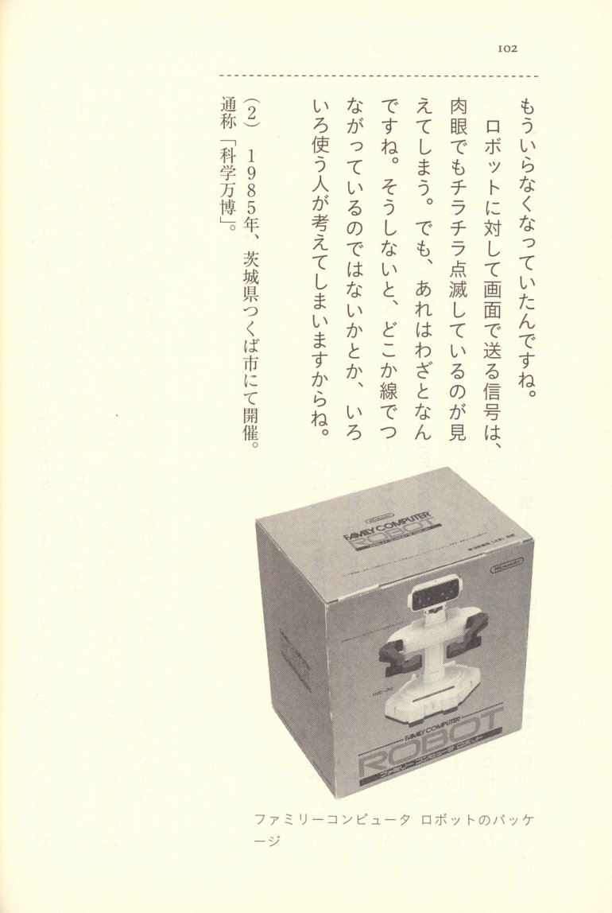

Chapter 2: Light Guns and Their Family (1970–1985)

Light Gun SP with retail box Light Gun SP
1970 (Showa 45). Price at time of release: ¥980–¥5,900
Having brought the "Ultra" trilogy—Ultra Hand, Ultra Machine, Ultra Scope—into the world, Yokoi's career as a developer was sailing along with the wind at his back. From here, guided by the same philosophy as the Love Tester—"commercialize the things you yourself want"—he struck gold with the "Light Gun." What began as a simple product—a Light Gun and a target—grew into a long-running series that expanded to include the arcade games "Laser Clay" and "Wild Gunman," and eventually "Duck Hunt," which combined the Light Gun with the Famicom. Yokoi's career as a developer entered its second golden age.
When you hear "Light Gun," you can't help but imagine some elaborate mechanism built into the gun itself, like a laser beam— But that kind of thinking has nothing to do with "Lateral Thinking with Seasoned Technology." In Yokoi's approach, you first consider cost: the gun side simply repurposes a flashlight bulb. The ingenuity is on the target side.
Embedded in the target is a light sensor—and of all things, it's a solar cell. People tend to be locked into the idea that solar cells simply receive light and generate electricity, but using one as a "light sensor" is precisely "lateral thinking." This product is a textbook example of "Lateral Thinking with Seasoned Technology."
Solar cells only become confusing because we call them "batteries"
I'd always had a vague interest in guns, and I used to make things like spearguns. With toy guns, you never know where the shot is going to go, right? But a Light Gun shoots perfectly straight—I found that tremendously appealing.
At the time, Light Guns had already been featured in science magazines and the like, and a sensor called CdS was used. However, the response speed was slow, and to put it bluntly, it only worked in total darkness. When I made a prototype using CdS, it wouldn't respond in a bright room. Basically, the sensor could only read something as crude as "is it bright or dark?"
That's when a solar cell was brought in by a supplier. This used a method called one-shot multivibrator, and even in a bright environment of 1,000 lux, it could respond to just 1 lux of light. I thought that was incredible and immediately adopted it for the Light Gun.
At first, because it was called a solar "battery," I assumed it was something like a fuel cell. But when I heard the explanation that it was a sensor, I realized, "Oh, so that's what it can do." Calling it a "battery" is what makes it confusing.
But when I asked the price, they told me 500 yen for a 5-millimeter square piece. I said, "We can't use something that expensive." When I asked why it cost so much, they said it was because of the labor involved in soldering the positive and negative electrodes. So I thought about it and came up with this: seat the solar cell on a metal plate and pull the positive lead out from the bottom. From the top, press it down with a lens and pull the negative lead out. This way, no soldering is needed, and at the same time the amount of light collected also increases— it can be made cheaper. I designed it so that no soldering was needed—essentially the same mechanism as a dry cell battery case. With that, the price dropped from 500 yen all the way down to about 50 yen. And that's when the Light Gun project suddenly became a concrete reality.
The solar cell was brought in by a salesman from Sharp, and apparently demand surged so much after this that he was commended for it—for coming up with a use for solar cells. But the one who actually thought of it was me. (Laughs)
If You Build It This Way, It Should Work, Right?
Speaking of unforgettable struggles with the Light Gun—the receiving end could detect light using a one-shot multivibrator, reacting to even a one-thousandth-of-a-second pulse of light. But the problem was the device that had to emit that one-thousandth-of-a-second flash. Using a strobe would have made it incredibly simple, but something that expensive was out of the question.
So I tried to make do with a dry cell battery and a flashlight bulb, using a guillotine shutter. When you pulled the trigger, the bulb would light up, and once it reached a certain level of brightness, the gui-
Light Gun Custom Gunman Set guillotine shutter would drop. That was the device I came up with, but the deadline was already bearing down on me, and I was up until dawn on the final day drawing up the blueprints.
Normally, once you've drawn up the blueprints, you should build a prototype and verify it. But there simply wasn't time for that. So I drew up the blueprints and fled behind the logic that "ideally, this should work," handing the design drawings to the toy manufacturer and declaring, "If you build it exactly like this, it should work." But of course, the manufacturer couldn't simply build it from drawings alone, could they?
Still, I had no other option. Then the parts started coming in. Assembling them was nerve-wracking, let me tell you. But when we actually tried it, it worked, and I was so relieved. When I think about it now, the precision of the finished parts was absolutely all over the place, but the parts from here and there the distortions absorbed each other, and everything worked out fine. And so the product somehow made it to market.
It hits a target even 200 meters away!
When the prototype of the Light Gun was completed, I showed it to the company president. Now, the president was someone who didn't know the first thing about guns — when he tried shooting, he couldn't hit the target at all. So I told him, "With a gun, there's a rear sight and a front sight, and you line them up to aim." Once I explained that, he was able to hit it. And the look on his face when he did — he was absolutely thrilled. Every time a visitor came, he'd say, "Hey, go bring that gun over here!" Watching that, I thought, "This thing is going to sell." And that was despite it being extraordinarily expensive for a toy at the time.
For someone who had grasped the essence of shooting, the whole point was that it hits exactly where you aim, so naturally we were targeting middle school students and older. More than anything, it was something I personally wanted.
Before long, camera strobes started getting cheaper, so a Light Gun using a strobe

Light Gun Custom Lever Action Rifle was made. Mechanically, nothing was changed at all — we just swapped in a strobe for the light source to make the custom version. Even I was amazed: the light from a strobe reaches 100 meters. In broad daylight, it can reach 200 meters. At the Tokyo branch's product presentation, I placed a target in a building about 200 meters away across the street and shot at it — and it hit beautifully. Everyone was thrilled. I was pretty surprised myself.(1) A unit of illuminance. For reference, the illuminance of a television studio is approximately 1,000 lux, and the light of the moon as seen from the ground is approximately 1 lux.
Laser Clay
1973 (Showa 48) — Arcade Game
Around the time development of the Light Gun series had reached a stopping point, the company president approached Yokoi with a proposal: "Could we create a competition using the Light Gun?" Yokoi turned his attention to clay shooting. Clay shooting is the sport of launching disc-shaped targets (clay pigeons) into the air and shooting them down with a shotgun.
In order to simulate this with a Light Gun, the first thing Yokoi did was go out and actually try clay shooting himself. He wanted to understand the essence of what makes clay shooting fun. That firsthand experience turned out to be extremely important. Clay shooting requires a technique called "leading the target" — aiming ahead of the clay — and this is something that only someone who has actually done the shooting can understand. By reproducing this "leading" technique, Laser Clay would go on to earn high praise.
There was also another issue: Laser Clay ran into a technical problem. With the Light Gun, the target cannot move. You can only aim at a stationary target. However, in the case of Laser Clay, the target — the clay — traces an arc and flies across the screen. With a moving target, embedding a sensor in it isn't feasible. So instead, a light sensor was embedded in the gun itself — the gun became the device that receives the light, and the clay was drawn on the screen using light. Being able to draw the moving target with light was the key. This was the opposite of the normal setup, where the gun fires light and a sensor in the target detects it. By departing from the conventional wisdom that "the Light Gun fires light," the series opened the door to a wide variety of innovations.
"Buy me an air rifle." "What for?"
I had been continuously making Light Guns, and then one day the president saw an article in some newspaper about air gun shooting competitions and came to me saying, "It seems like air gun competitions are a thing. So why can't we hold competitions with our Light Guns?" On my end, I thought, "If people are already doing that sort of thing, why can't our Light Guns be used for competitions too?" — that was the general idea behind it.
However, I figured that simply doing air rifle competitions with a Light Gun wouldn't be all that interesting. Watching the real thing, shotgun-based clay shooting looked much cooler. So I decided to try clay shooting at least once, and told the president, "Please buy me a gun." The president was taken aback — "What for?" After explaining, I got the company to buy a real shotgun. When I actually tried clay shooting, it turned out to be quite fun, and I got a real, tangible sense that it could be simulated with a Light Gun.
The target emits light, and the gun receives it
"Laser Clay" doesn't emit light — it uses a light-receiving gun. The target projected on the screen is picked up by a camera inside the gun. That's the mechanism.
Furthermore, the target's light was made to blink, carrying a signal. By doing this, the system would never mistakenly recognize sunlight or indoor lighting as the target — it would respond only to the target. The target constantly emits a blinking signal, and when the gun's trigger is pulled, the light is read. If the received signal matches, it registers as a hit. That's how it works.
This kind of technology was apparently quite commonplace in the world of security equipment and the like. It's just that nobody had used it in a gun before. (Laughs)
The Laser Clay that Reproduced "Leading the Target"
This is something I believe I have a patent on. In clay shooting, the clay launches from about 10 meters below at roughly a 45-degree angle. If you aim directly at the clay and fire, you'll miss. You have to aim just ahead of where the clay is flying and shoot. It's a technique called "leading the target." If a pro does it, they always lead the target. When I tried clay shooting myself, I realized that this was the whole point of the game. If we couldn't reproduce this, we couldn't call it clay shooting.
So what I came up with was to attach the real target — invisible, using infrared — just in front of the clay. Slightly ahead of the visible clay-shaped target, the real infrared

Leading the target mechanism diagram target is flying. When you lead the target and fire, the infrared target is hit perfectly. This design was extremely well received by people who actually do clay shooting, and quite a number of them said, "I'd love to use this to practice clay shooting."
Regarding this Laser Clay, there is one more thing worth explaining. It was a landmark product in Yokoi's career. This Laser Clay was built on a scale far exceeding that of ordinary arcade games. Rather than placing a machine in a corner of a game center, it took over an entire wide floor space such as a bowling alley and transformed it into a Laser Clay venue. In other words, it was an "indoor Laser Clay range." As Yokoi himself put it, "I didn't want it to be just a game — I wanted it to take root as a sport." To understand this as simply a large-scale arcade game would be to miss the bigger picture — and would make it harder to understand Yokoi's subsequent work.
The Nintendo of that era was desperately searching for a way to shed its skin as a toy manufacturer, and the great pillar of that effort was this Laser Clay. It was, in effect, a product on which the company had staked its fate.
In the end, Laser Clay was struck by the misfortune of the oil shock and ended in commercial failure. However, the reception from those who experienced it was extremely favorable, and Yokoi himself said he couldn't help but feel it was a terrible shame. From this point on, Yokoi would enter a period of dedicating himself to the development of large-scale leisure systems and arcade games like this one.
"I thought they were an electronics company, but they turned out to be a machine shop"
In clay shooting, the competitor has no idea which direction the clay will fly. The direction is determined at the moment you call out. So the Laser Clay had to work the same way. The projector that displayed the target was constantly tracing a figure-eight pattern, and the instant you called out, it would lock in place and send the target flying in that direction. That's the kind of mechanism we That's the kind of mechanism I, an electronics guy, came up with.
The hardest part was the exponential movement of the clay flying far away, getting smaller and smaller as it falls. How could you mechanically make the projected image of the clay gradually shrink? The only option was to combine various cams and find a way to do it through the aperture mechanism. It would have been simple if we'd used a lens, but we'd already built the aperture components by that point. As for the cam combinations, I ended up drawing the blueprints myself. People around me started saying, "Mr. Yokoi, we thought you were an electronics guy, but it turns out you're a machine shop guy!"
Caught in the wake of the oil shock...
Around that time, bowling alleys were closing down one after another, and we planned a product called "Laser Clay" to make use of those vacant sites. We even had clay shooting professionals help us out, and it was very well received — at first, it was growing at a tremendous pace. But then the oil shock of 1973 hit, and everything came to a sudden, dead stop.
In the end, it caused enormous damage to the company. And what made it especially painful was that orders had been pouring in nonstop, and the moment we'd prepared all the materials, everything ground to a halt. That's where Nintendo's suffering began.
(1) A mechanical element or component that converts the direction of motion. For example, the valve cam in an engine uses the rotation obtained from the engine's output shaft to open and close the valves.
(2) At its peak, there were bowling alleys every few hundred meters — that's how intense the so-called "bowling boom" was — but the market had already reached saturation.

Laser Clay was highly regarded, but it coincided with the oil shock and ended up inflicting enormous damage on the company. Nintendo's products up to that point had been strictly toys, centered on items priced at under 10,000 yen. Laser Clay, however, was a large-scale leisure facility, and this failure was on an entirely different order of magnitude from anything in the toy business. From this point on, a painful era for Nintendo would continue until the arrival of Game & Watch in 1980.
That said, when we say "painful era," that refers strictly to the company's finances. Developer Yokoi, for his part, went on to produce one arcade masterpiece after another. Among our readers, there are surely those who, as they read on, will think, "Oh, so that's what that was!"
If You're Going to Do It, Do It Big
The first arcade game I created was a shooting game called "Wild Gunman." The appeal of this game was that different footage would appear depending on whether you hit the target or missed. Looking back now, it might seem like a perfectly ordinary feature for a game, but this was an era when not only computer graphics but even video was not commonly used. I built a system that used 16mm film to branch the footage.
Additionally, a variation of Wild Gunman called "Fascination" was a forerunner of what we would now call strip games. This too is a game that is hard to overlook when considering the history of games.
Having gotten used to building grandiose things with Laser Clay and the like, this time too I made Wild Gunman with the attitude of "If we're going to do it anyway, let's make it big."
Wild Gunman film variety flyer As far as I was concerned, it was nothing more than a prototype made without any regard for profitability — but when I tried making it, it was very highly praised. People told me, "You should put this on sale." And so it ended up being sold.
Wild Gunman was a quick-draw game set in the American Old West. A gunman would appear on screen, and the idea was to draw slower than the gunman but shoot faster. We prepared two projectors so that the footage would automatically switch between the winning footage and the losing footage. When you hit the target, the footage showed the gunman collapsing; when you missed, the footage showed him standing there with a smirk.
When you pulled the trigger, a scene of smoke billowing up was inserted. That's where the footage would switch. We used the smoke footage to cover up the moment the projector was switching over. But people who saw it were astonished. "How come when you win, the gunman drops dead, and when you lose, he's standing there laughing?" they'd say.
A Wild Gunman flyer
Wild Gunman mechanism diagram The Wild Gunman mechanism — two projectors switch between hit and miss footage
So game centers wanted to use it as a kind of showpiece attraction, and we ended up getting a lot of orders. But this was a machine that was never designed with mass production in mind. 16mm film has virtually no durability at all.
Film is inherently made to break easily, so as not to put strain on the machine. And that's exactly what happened. So we got Fuji Film involved and had them develop an unbreakable film made of Tetron (polyester fiber). They told us, "If you use a film like that, you'll destroy the machine," but we insisted, "As long as the film doesn't break, we don't care if the machine breaks."
That gave us a reasonable degree of durability.
The endless tape was structurally prone to scratching the film, so we came up with what we called the Yuzen method. We had the whole thing wind on pulleys (sheaves). After all these various innovations, we finally achieved durability of around five hundred or a thousand plays.
Live-action footage with a blonde woman...
When we unveiled Wild Gunman, all the newspaper reporters were men, so we made something called "Fascination," thinking it would be fun to have something a little different. A girl dances in time to the music, and when the footage freezes, she points to the knot on her clothing. If you shoot that spot and hit it, the clothing falls off. If you hit every single one without missing, she ends up completely naked. (Laughs.)
This was a big hit. We hadn't planned to sell it, but a game center in Shinjuku kept it on display for a while. After all, it was live-action footage, so of course it was a hit. We used a Swedish model, and I was there for the shoot myself — she really was a beautiful model. Back then it wasn't the age of computer graphics, so we were going for the appeal of being able to create something yourself using live-action footage. Well, nowadays you could easily do it with videotape, but back then all we had was 16mm film.
Wild Gunman apparently looked interesting enough that it sold all over the world. That said, it was only about a hundred units total. That's how desperate things were for Nintendo — we had to try anything we could. It got a lot of attention, but it was an incredibly difficult product to actually sell. When we placed one in a game center in Kobe, such a huge crowd gathered that the police came by, saying it was causing traffic jams.
Thanks to this game, we ended up appearing on the TV show "Who's the Real One?!" The idea was, "Who is the real person who made this game?" The panelists were Jo Shishido and Chiemi Eri, and the host was Masaru Doi. It didn't lead to any profit for Nintendo, but it seems the impact alone made it worthwhile.
(1) A celebrated actor who graced the era of Nikkatsu action films. The quoted remark refers to the period after the decline of film, when Shishido began appearing in dramas and variety shows.
(2) One of the trio known as the "San'nin Musume" (Three Girls) along with Misora Hibari and Yukimura Izumi. A singer, film actress, and stage actress who graced the Showa era, she passed away in 1982.
(3) A freelance announcer originally from Bunka Broadcasting. He was memorable as the distinguished host of programs such as "TV Jockey" and "Zojirushi Quiz: Hint de Pinto," but passed away in 1999.

Battle Shark arcade flyer Battle Shark, Sky Hawk
1977 (Showa 52), Arcade Game
While Wild Gunman was an arcade game, it was not actually an official product — it was originally a prototype. It received such a favorable reception that they ended up selling it commercially. What Yokoi produced next were "Battle Shark" and "Sky Hawk," developed from the start with sales in mind. Both could be summed up simply as "shooting games," but the major distinguishing feature was their use of live-action footage. Nowadays, streaming live-action footage on a computer or using video is a trivially simple matter. But back then, if you wanted live-action footage, the only option was 16mm film. If you peeked into a game center at the time, Space Invaders had not yet appeared, and crane games, pinball machines, and coin-operated games were the mainstream. Live-action footage made a powerful impact in that era.
What's interesting about Battle Shark and Sky Hawk is that the player thinks they're aiming at a high-speed boat or a fighter plane, but in reality they're just shooting at a simple white dot hidden inside the cabinet. Displaying live-action footage and then trying to determine hit detection when the player shoots at it with a Light Gun is extremely difficult. So the gun the player is holding is a complete dummy, and a separate Light Gun that moves in sync is concealed inside the cabinet. It's this hidden gun that actually does the shooting.
Blowing Them Away with Live-Action Footage
"Battle Shark" and "Sky Hawk" are variations on games that used 16mm film —
(1) Refers to Space Invaders, the arcade game released by Taito in 1978.

Battle Shark internal mechanism diagram The principle is the same as Wild Gunman. Battle Shark is a game where you shoot at high-speed boats, and Sky Hawk is a game where you shoot at fighter planes.The film is split into upper and lower halves. The upper portion shows footage of fighter planes and such, while the lower portion has corresponding images with a white dot at a certain position. When you aim the machine gun at a fighter plane, what you're actually shooting at is the white dot in the lower half. The crosshairs are offset so that they align this way. After hitting it several times, the mirror switches to footage of the fighter plane exploding. This explosion footage is built into the lower portion.
Around this time, there was a feeling of "Let's really blow people away with live-action footage."
 Duck Hunt Light Gun Duck Hunt
Duck Hunt Light Gun Duck Hunt
1976 (Showa 51). Price at time of release: ¥9,500
Nintendo and Yokoi's foray into the amusement industry did not produce particularly impressive results. Laser Clay, Wild Gunman, Battle Shark, and other individual arcade machines were able to win popularity, and even today they are widely hailed as masterpieces. However, translating that popularity into profits proved quite difficult, it seems. "Personally, I never really distinguished between arcade and home games. In any case, what I found exciting was that the things I made were well received. I was just desperately trying to contribute to the company somehow."
With this as a turning point, Yokoi would return to the world of home game toys — his old stomping ground.
The first work marking his return, so to speak, was "Duck Hunt." This home game projects the shape of a duck onto a wall using light. You aim at it with a Light Gun and shoot. When you hit the duck drawn in light, it flaps and falls — that's the game. It's part of the Light Gun series. But when you shoot a mere light target with a Light Gun, what exactly are you hitting? This is where the mechanism gets interesting, and it's what makes Duck Hunt such a fascinating game. It was later ported to Famicom software as well. That version is a Light Gun game where you shoot ducks on a TV screen.
What exactly do you hit?
"Duck Hunt" was often met with the question, "What are you actually hitting?" — meaning, what happens when you shoot a Light Gun game like this? The machine projects an image of a duck onto the wall. When you aim the Light Gun at the wall and shoot the duck image, the image switches to one of the duck flapping its wings and falling. The duck image is projected from a projector, reflected off a mirror, and displayed on the wall. The duck's

How Duck Hunt works: Light emitted from the gun is reflected in a mirror and reaches the sensor image is shot, and the light from the Light Gun is added to it. That light travels back along the mirror in reverse and returns to the projector. Next to the projector, there's a one-shot multivibrator sensor, and that's where the hit detection is performed. People found this quite mystifying.When we built the Light Gun Custom using a strobe, the light could reach a full 200 meters, so it had more than enough power. The idea of finding a way to harness that power was the origin of the concept.
Hit Detection in a Single Frame
In the Famicom software version of Duck Hunt, the instant you pull the trigger, the screen goes dark and a white square appears at the duck's position. If the sensor detects this, it registers as a hit. Since it lasts only one frame, it's invisible to the naked eye.

Famicom Duck Hunt — the screen goes completely black for just the moment of firing, and a white square appears at the duck's position. However, with this method the screen inevitably flickered, so for the later "Super Scope," we switched to a method that detects the scanning lines. When using scanning lines, you have to calibrate the aim before starting the game. So Duck Hunt is the one that anyone can casually pick up and enjoy.Freezing, Then Zooming In
In Duck Hunt, you shoot the ducks as they fly out. In the cartoon animation, a dog flushes the ducks out, and there's this image of the dog suddenly freezing stiff like a board and then darting in after them. I wanted to use that, but I just couldn't get the image across to the designer. I suppose if you haven't actually watched cartoons, it's hard to convey that kind of thing.
I've always been a fan of natural science, and what I love in cartoons are the gags that are impossible from a natural science standpoint. Like when someone cuts a tree branch and instead of the branch falling, it's the person who falls. That's — because I've always loved Astro Boy. That was a manga grounded in the laws of natural science, after all.
TV Games and the Light Gun Don't Mix
So that covers the Light Gun series up to this point, but the truth is, TV games and Light Guns don't really go together. Recently, pistol-type TV games have been coming out, but to put it in a word, I think the people making them have "run out of things to do."
When we were making Light Guns for TV games, we were always thinking, "What are we going to do if people get tired of this?" When you want to do something different with the screen, a gun is the easiest thing to think of, and I suspect people are working on the assumption that if they combine a gun with it, maybe it'll turn into some kind of different game. But I don't think that's going to produce anything that surpasses the games of the past.
(1) Nintendo released the "Super Scope 6" bundled together as a peripheral for the Super Famicom— —released in 1993 as an infrared wireless controller. It is used by shouldering it and peering through it with one eye.
(2) String-like traces that cross the display horizontally. The greater their number, the higher the resolution of the screen.
 Light-Ray Telephone LT Light-Ray Telephone LT
Light-Ray Telephone LT Light-Ray Telephone LT
1971 (Showa 46). Price at time of release: ¥9,800 (set of two)
Yokoi describes his own philosophy and approach to product development as "Lateral Thinking with Seasoned Technology," but in truth, he would sometimes end up creating things that were remarkably cutting-edge and innovative.
This "Light-Ray Telephone" was, for its time, a remarkably high-tech toy. "We had leftover solar cells from the Light Gun, so I made it from those," Yokoi says. Today, infrared communication through mobile phones and TV remote controls is nothing unusual, but a quarter of a century ago, he had already made it a reality as a working "telephone" you could actually talk through. At the time, even wireless walkie-talkies were still expensive toys that were out of reach for children.
As a product, the Light-Ray Telephone apparently wasn't much of a success. Even thinking about it now, it's clear that this was a toy far ahead of its time. Apparently, what originally inspired the creation of this toy was a desire to be able to chat between cars while out touring with several automobiles.
Carrying Voice on Light
"With the 'Light-Ray Telephone,' you look at the light coming from the other unit and speak into the microphone, and the voice rides on the light as a modulated wave and reaches the other side. Using a flashlight's beam, you can talk across distances of 100 meters, even 200 meters. It works through glass too, no problem — the idea was for conversations between cars. The thing is, since it's completely useless unless you have two of them, selling them as a set meant the price became outrageous.
"The truth is, we had leftover solar cells, so that's what led me to come up with this product. But in practical terms, there were problems like it eating through batteries and the voice not being clear enough, so even though it had novelty value, it ended up falling between two stools — too impractical for real use, too expensive for a novelty. As a set, it ended up costing close to ten thousand yen. It was partly an experiment to see whether you could really carry a modulated wave on the light from a flashlight. Well, it was a desperate idea, I'll admit.
Listening to the "Sound of Light"
For example, we also enjoyed listening to the sound of light. A Keihan train ran right alongside Nintendo, and we'd try listening to the sound of its headlight. Well, all you could really hear was a "shhhh" noise, but it was interesting in its own way. The sensation of "hearing light" was a rather mysterious feeling.
(1) When transmitting information such as video or audio by carrying it on radio waves, a process is applied to convert that information into the optimal electrical signal. A modulated wave refers to a carrier wave that has been modulated in this way.
 Block and Gyro robot set Block and Gyro
Block and Gyro robot set Block and Gyro
1985 (Showa 60). Price at release: ¥4,800 / ¥5,800
Most people probably don't remember them, but "Block" and "Gyro," creations of Yokoi, were quite unusual entries in the Famicom software lineup. In addition to the software, they came bundled with a robot. When you operated the robot using the Famicom controller pad, the robot would move — even though it wasn't connected by any cord. The command signals to the robot worked by flashing the TV screen. In principle it was an application of the Light Gun series, but as a toy it was a remarkably outstanding product.
This toy played an enormously important role when Nintendo expanded into America. The Famicom's reception in Japan had been built on the pitch of "an incredibly cheap TV game" — That proved to be a hit, and the system spread in massive quantities, with software houses jumping in one after another — they were able to ride this positive spiral successfully. However, the situation in America was different. First of all, the TV game market itself had already dried up.
Several companies had already been selling TV games, but poor-quality game software had proliferated, triggering the so-called Atari Shock, and the reality was that the market's enthusiasm had completely cooled. How, then, could Nintendo break into this market with the Family Computer? Using the same sales pitch as in Japan — "a cheap TV game" — alone would not be enough to hope for any great success. So they used the Light Gun and the robot as selling points, marketing it as an "entertainment system." In other words, the approach was to sell it not as a TV game, but as a new-generation toy that let you enjoy many different ways of playing. That is why the naming became not Nintendo Family Computer but Nintendo Entertainment System (NES).
This idea was a tremendous success, and the NES broke into the American market in almost no time at all. Once it had penetrated the market, they were able to ride the same positive spiral as in Japan — selling excellent software and expanding the user base. The Famicom's Ame- rica expansion, the Light Gun and the robot are landmark products that simply cannot be left out of the story.
(1) Refers to the slump in home game console sales that occurred during the American Christmas shopping season in 1982. Known as the "Video Game Crash of 1983."
The Robot as the Famicom's Life Extension Strategy
To begin with, the Light Gun software for the Famicom was something we created in order to extend the system's lifespan. As a further life extension strategy, we wondered whether there might be a way to play that combined the system with three-dimensional objects — and that's how we came up with the robot. Of course, if the robot just moved on its own, that wouldn't be interesting. It would be meaningless if it didn't move interactively. Since we had been using a method of sending signals via the TV screen with the Light Gun, we thought about applying that same approach. When you point the robot's eyes toward the screen, it catches the blinking signals from the screen and moves accordingly. That's how it works.
When you move the controller, a signal appears on the screen, and the robot receives it and moves the blocks exactly as the controller directs. That's the kind of game it was.
You remember the exhibit at the Tsukuba Expo where a robot spun a top? That was in the back of my mind when we created "Gyro." By making the top move, a button could be pressed — that's how it worked.
The Robot That Paved the Way for the American Launch
When it came time to launch the Famicom in America, the consensus was that TV games were a lost cause. So the approach was to say, "This isn't a TV game — it's a new kind of entertainment. And by the way, it can also play TV games." That's why it was given the name Nintendo Entertainment System. What we put on sale at that time were the Light Gun and the robot, and these served as the fuse that ignited considerable sales. As the user base grew, ordinary TV game cartridges started selling too. But by that point, the Light Gun and robot that had served as the initial fuse

Family Computer Robot packaging were no longer needed.The signal sent to the robot via the screen — you can actually see it flickering with the naked eye. But that's intentional. If you didn't make it visible, people would start wondering whether it was connected by a wire somewhere, or come up with all sorts of other theories.
(2) Held in 1985 in Tsukuba City, Ibaraki Prefecture. Commonly known as the "Science Expo."